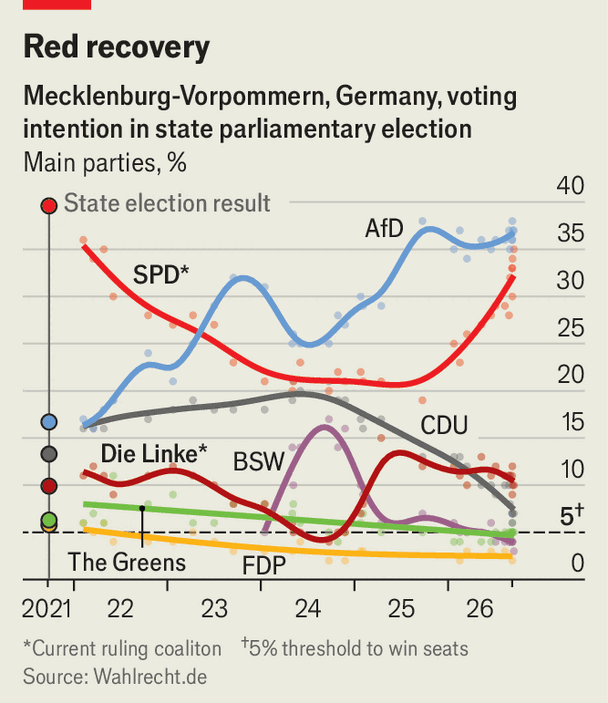

The AfD could stumble in another state election
A late surge by the ruling Social Democrats in an eastern state could slow the far right’s momentum
Sep 17th 2026
IT IS A curious venue for a sober politician. Inside a circus big top in Rostock, a port on Germany’s Baltic coast, Manuela Schwesig, the Social Democratic (SPD) premier of the state of Mecklenburg-Vorpommern, is pitching to the party faithful ahead of elections on September 20th. Ms Schwesig offers mild red meat (swipes at oil firms), empathy for voters weathering price rises, and a few personal anecdotes. Yet there is one killer sales pitch. Only voting spd, she says, can “prevent the afd from becoming the strongest force”.
On September 6th the far-right Alternative for Germany won a spectacular victory in the eastern state of Saxony-Anhalt. It long expected to repeat the feat in “Meck-Pom”. Lilly Blaudszun, Ms Schwesig’s campaign manager, pulls out her phone to display a poll from a year ago showing the spd on just 19%, half the afd score. But Ms Schwesig has staged a dramatic comeback. The spd is now just two percentage points behind the afd (see chart).

For that, she can thank the afd bogeyman. An spd poster depicts Ms Schwesig, in socialist red, as “Die Frau gegen blau” (“The woman against blue”), the afd’s colour. By reducing the vote to a two-horse race, Ms Schwesig, in office since 2017, is exploiting her popularity to nab support from other parties, including the Christian Democrats (cdu). Most voters want her to keep her job.
Once dismissed as a “coastal Barbie”, Ms Schwesig slowly earned a reputation as a Landesmutter, or “mother of the state”, says Jochen Müller at the University of Greifswald. She has overseen modest growth in a poor state. Abroad she is best known for her robust defence of Nord Stream 2, a Russian gas pipeline that came ashore in her state (and was later blown up, allegedly by Ukrainians). In 2021 she even established a foundation designed to circumvent American sanctions, with money from Gazprom. Ms Schwesig now says that was a mistake and stands behind Germany’s support for Ukraine. More recently she has found favour by atttacking the pension reform of the federal government, in which the spd serves as junior partner.
Even if Ms Schwesig fails to overtake the afd she will probably remain premier, perhaps heading a three-way leftist coalition. That would leave her well placed to inherit the national leadership of the spd, if, as many expect, one or both of its co-chairs steps down after the election in Mecklenburg-Vorpommern and another in Berlin. And if her polarisation tactics push the cdu below the 5% threshold, even Friedrich Merz, the chancellor, could find his job at risk. ■